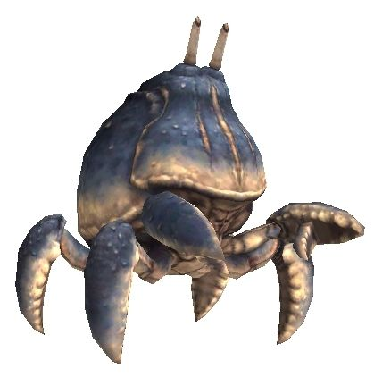

Level 75 reference · Zenith rules
Crabs, the smaller, water-loving monster of Vana'diel, is a commonly seen creature, and many adventurers become very familiar with their image quite quickly. Although crabs can come in a variety of shapes and strengths, they all share a few traits - most notably, their shells provide a bit of defense (which it can boost through various means), and their strong pincers can cause more than just a few bruises and minor cuts, especially against adventurers who don't keep their wits about them.
|
General Information |
 Image source |


Special Attacks
| Special Abilities | Original and Zilart Areas | Promathia Areas | Aht Urhgan Areas | |
| Metallic Body - Stoneskin effect | ||||
| Bubble Shower - AoE water damage and STR Down | ||||
| Bubble Curtain - Gains the effect of Shell (-50% magic damage taken) | ||||
| Scissor Guard - Defense Up (+100% defense boost) | ||||
| Big Scissors - Single-hit TP attack | ||||
| Note: Notorious Monsters in this family may use all of the above and/or additional unique special abilities. | ||||
Notorious Monsters in Family
| Name | Spawn Information | Level | Zone | Notable Drop(s) |
|---|---|---|---|---|
| Aquarius | Lottery Spawn from the Robber Crabs around (H-10) on the first map approximately every 2 hours | 69-71 | Boyahda Tree | Fransisca |
| Cancer | Forced Spawn randomly when a Quus is traded to the ??? at (H-7) on the first map | 65 | Kuftal Tunnel | Arondight |
| Cargo Crab Colin | Lottery Spawn from the Clipper around the riverbank at (H-7) - (H-8) on the same map as the Jammer Leeches | 35-37 | Korroloka Tunnel | Nadrs |
| King Arthro | Ten Knight Crabs pop 21-24 hours after King Arthro dies. After all ten of these Knight Crabs die, King Arthro will spawn. | 55 | Jugner Forest | Damascene Cloth |
|
Quest NMs: Bubbly Bernie, Bloody Coffin, Ferrocrab, Heike Crab, Megapod Megalops Mission NMs: None Battlefield NMs: Heavy Metal Crab (BCNM), Metal Crab (BCNM) Other NMs: Passage Crab (Fished), Mugger Crab (Fished), Savanna Crab (Fished) | ||||
Monsters in Family

Adapted from Eden Wiki: Category:Crabs · Contributors and history · CC BY-SA 4.0. Revision 2324. Layout, links and optional background text adapted for Zenith.
Articles
- Adamantshell
- Aquarius
- Arrapago Crab
- Aydeewa Crab
- Bigclaw
- Blind Crab
- Bloody Coffin
- Bubbly Bernie
- Cancer
- Cargo Crab Colin
- Carrion Crab
- Clipper
- Coral Crab
- Crimson Knight Crab
- Cutter
- Cyan Deep Crab
- Ferrocrab
- Ghost Crab
- Greatclaw
- Grindylow
- Gugru Crab
- Heavy Metal Crab
- Heike Crab
- Ironshell
- Kelp Crab
- King Arthro
- Knight Crab
- Land Crab
- Limicoline Crab
- Mamook Crab
- Megapod Megalops
- Metal Crab
- Mine Crab
- Mole Crab
- Mugger Crab
- Nightmare Crab
- Nipper
- Ocean Crab
- Palm Crab
- Passage Crab
- Petrocrab
- River Crab
- Robber Crab
- Rock Crab
- Sand Crab
- Savanna Crab
- Scavenger Crab
- Sea Crab
- Sicklemoon Crab
- Snipper
- Stag Crab
- Steelshell
- Stone Crab
- Submarine Nipper
- Thickshell
- Tree Crab
- Triangle Crab
- Undead Crab
- Vermivorous Crab
- Wadi Crab
- Wootzshell